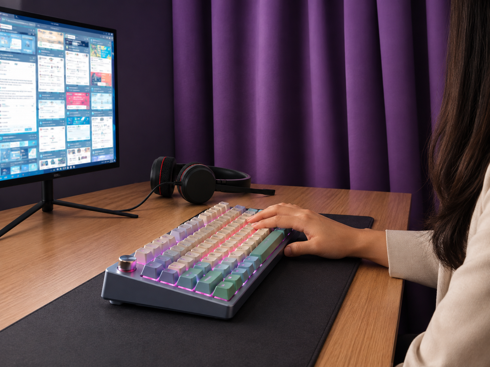

I’m a remote support and operations specialist in the Philippines. In four years I’ve worked on very different accounts: online retail, car rental brands, an education platform, and now billing escalations. Each had its own rules, its own way of talking to customers, and its own idea of a good ticket, so I’ve gotten used to picking up a new setup fast and not needing someone beside me while I learn it.
At Tier 3, I get the cases Tier 1 couldn’t close. Most of it is detective work: going through what happened on the account, finding where it went wrong, and either fixing it or explaining the next steps clearly. Then I write it up so the next person can see exactly what happened and what was done. When Tier 1 queues back up, I step in and help clear the chat, email and phone queues so SLAs are met and customers get the support they need faster.
